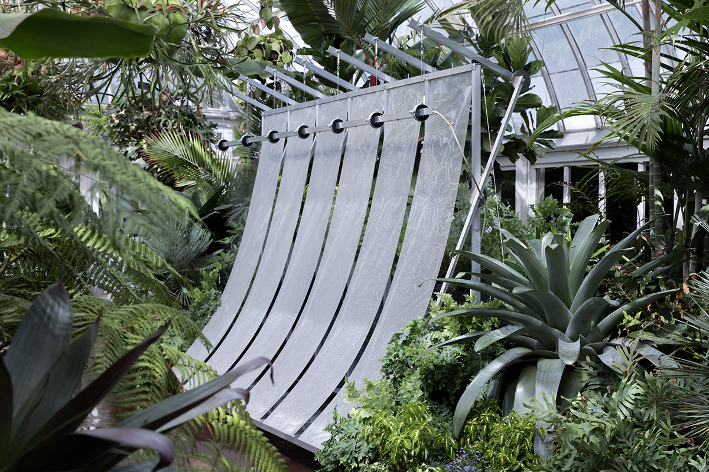
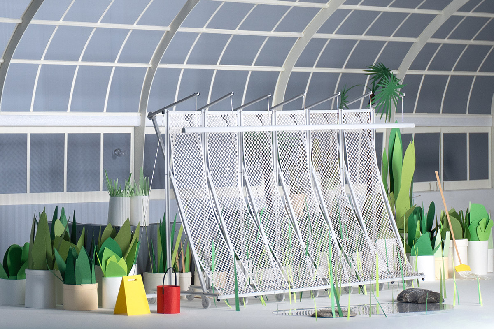
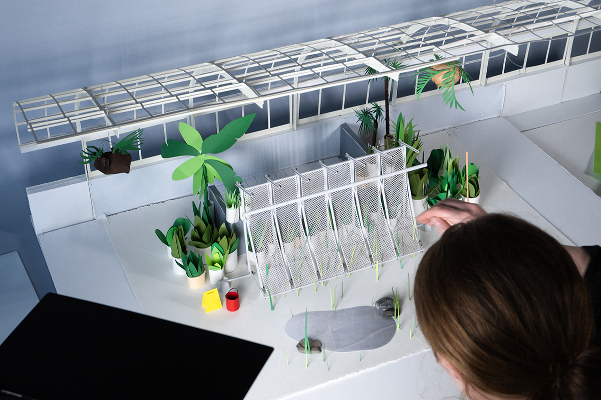
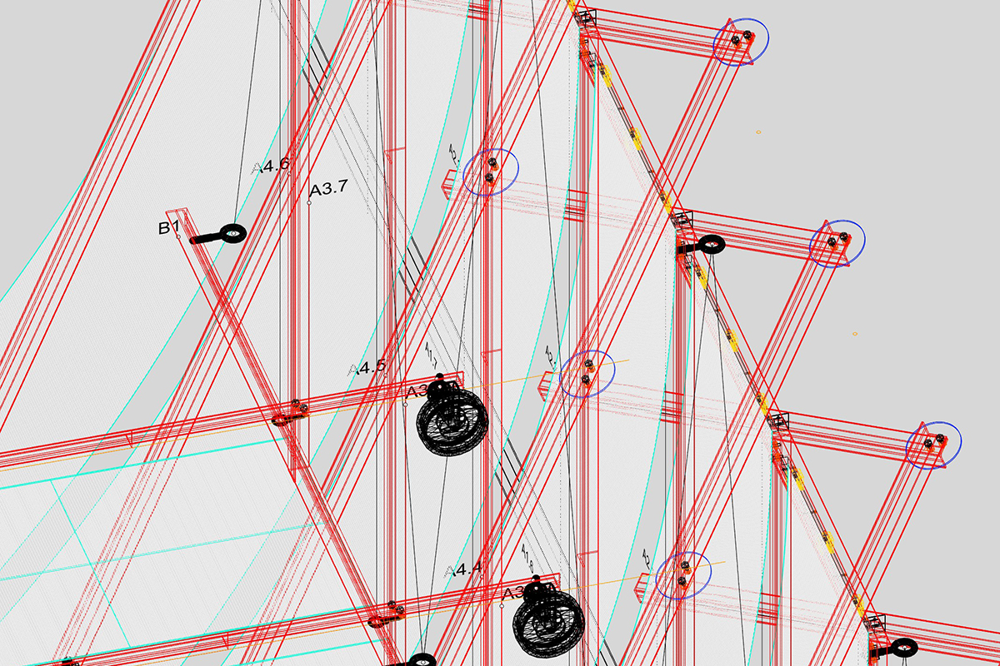
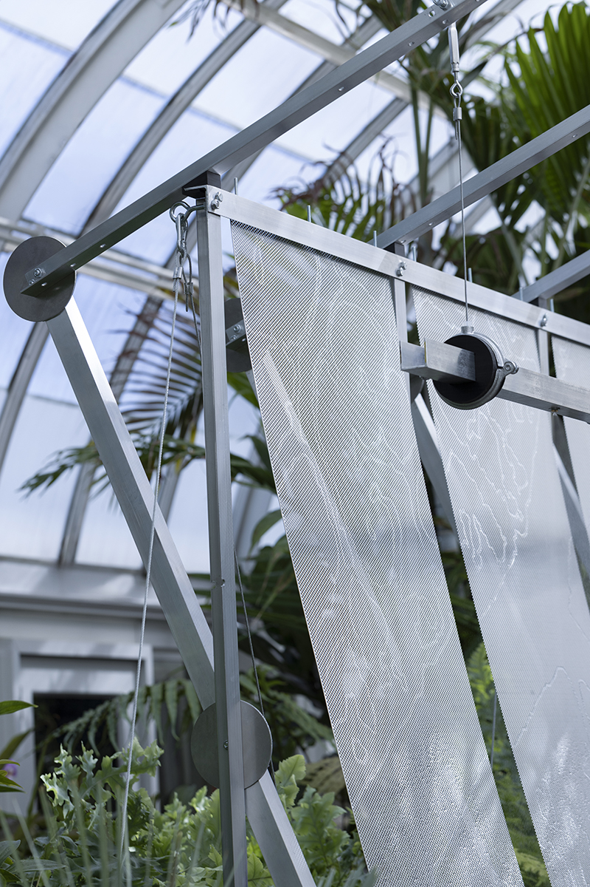
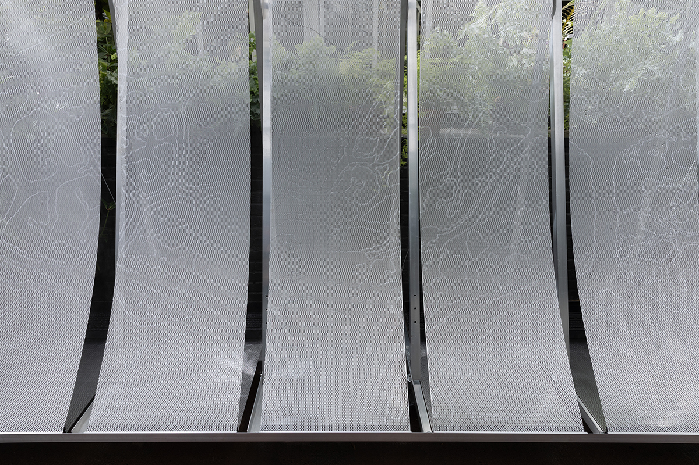
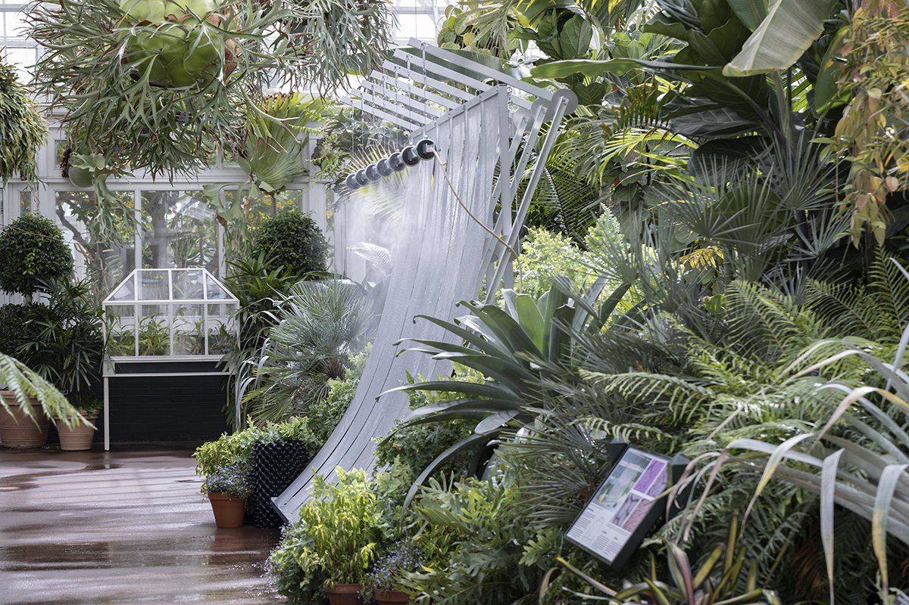
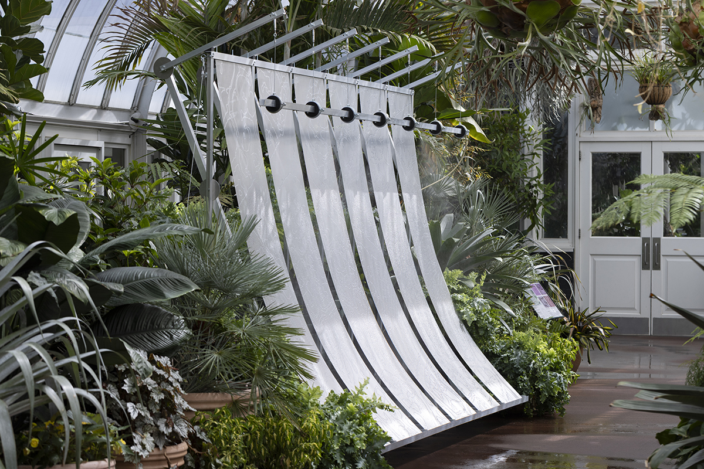

Greenhouse Prototype 2 is a lightweight, mobile climate device. Through shade, passive airflow, and misting pumps, it produces a micro-environment comfortable for plants and people. The installation’s form is in transformation: its aluminum frame is recycled and reconfigured from Greenhouse Prototype 1, exhibited in 2025 at Syracuse University School of Architecture. In this iteration, the curve of the installation’s panels follow a ten foot radius, mirroring the Conservatory’s historic glass roof. Over time, the delicately assembled surfaces will become overgrown with plants and disappear. Etched into the perforated screens is a drawing abstracted from microscopic views of the vein structures of leaves, mapping how plants anatomically distribute water and resources. The drawing and installation together propose multiple scales for moderating environmental stress. Greenhouse Prototype 2 imagines how future greenhouses can evolve from airtight enclosures to porous habitat refugia: areas that provide shelter for species to survive harsh environmental conditions.






